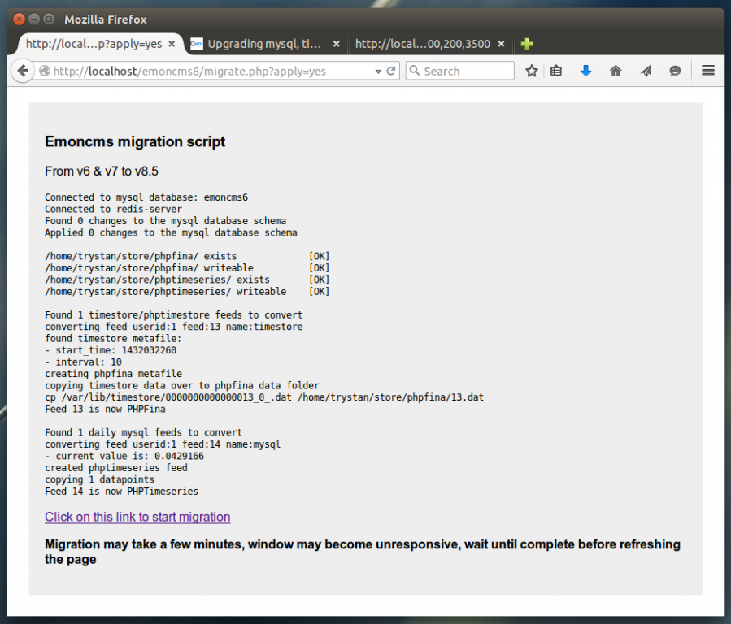

Over the years emoncms has stored data in different ways starting with mysql then a timeseries database called timestore then phptimestore. Since February 2014 emoncms has used 3 feed engines called:
phpfiwa: php fixed interval with averaging
phpfina: php fixed interval no averaging
phptimeseries. php variable interval (no averaging)
These 3 feed engines have now been stable for almost a year, they provide a number of benefits both over the original mysql feed engine and timestore/phptimestore. If your interested in learning more about timeseries engine development in emoncms you may be interested in reading more about it here: https://github.com/openenergymonitor/documentation/tree/master/BuildingB...
With these 3 engines stable Id like to depreciate the older engines so that I can focus new developments like the new get data method that is used in the application specific dashboards on the new engines. Ensuring that all engines maintain the same api and provide the same output adds a lot of extra development work.
Im aware that there are many systems out there running these older feed engines partly because there isnt any documentation at the moment on how to upgrade existing data to the newer engines so Id like to change that and open this thread to help people upgrade!
Upgrading timestore/phptimestore to phpfina
Both timestore and phptimestore store the data in layer 0 in the same format as phpfina does. So this conversion is just a simple move and file rename of the main timestore/phptimestore data file, then the writing of the phpfina format meta data file and updating of emoncms to tell it that the feed engine has changed for that feed. There's already a script to do this in the emoncms/usefulscripts repository on github and this is the script I used on emoncms.org to upgrade the feeds there. I've updated it a bit today to put the config all in the same place and add a couple of checks.
Before starting you will want to note the location where emoncms is installed on your system (usually /var/www/emoncms on linux) and the location of the timestore data folder (usually (/var/lib/timestore) and its probably wise to do a backup following the backing up a full emoncms installation documentation here: https://github.com/emoncms/emoncms/blob/master/docs/Backup.md
1) Start by checking that you have created the phpfina feed directory and set the correct permissions:
sudo mkdir /var/lib/phpfina
sudo chown www-data:root /var/lib/phpfina
2) Then download the "usefulscripts" folder:
git clone https://github.com/emoncms/usefulscripts.git
or download zip: https://github.com/emoncms/usefulscripts/archive/master.zip
3) Navigate to the "convertdata" directory: cd convertdata
4) Open to edit the script called: phptimestore_to_phpfina_mv.php
5) check that line 5 corresponds to your emoncms installation location, line 6 corresponds to your timestore folder location and 7 to your phpfina folder location.
6) run the script from the command line with:
sudo php phptimestore_to_phpfina_mv.php
That should now run through and convert the timestore/phptimestore feeds to phpfina.
7) You may need to check that your emoncms/settings.php file has the feed engine entry for phpfina. If its an old settings file it may be easiest to start by creating a new settings.php file from default.settings.php
I will detail a method for converting mysql timeseries feeds to phptimeseries feeds next.
Re: Upgrading mysql, timestore, phptimestore feed engines to phpfina and phptimeseries
Hi Trystan, I think this is a good move, but often the HowTo's assume a level of knowledge that simply the end user does not have. I'm not without knowledge completely here so I'll have a go at the weekend and post questions as I go along.
First question is, do I upgrade emoncms first before running the above? If so does it matter what version I am on? If so how do I find out the version? :)
Re: Upgrading mysql, timestore, phptimestore feed engines to phpfina and phptimeseries
Hi Trystan, OK ran that on a fresh install of 8.4 with database previously converted / updated. The question is - so what? Does emoncms now update all the different engines? I feel I am missing something :)
Re: Upgrading mysql, timestore, phptimestore feed engines to phpfina and phptimeseries
Ok I've goosed something as all the feeds have gone :(
Re: Upgrading mysql, timestore, phptimestore feed engines to phpfina and phptimeseries
What about emoncms.org feeds ? Tnx
Re: Upgrading mysql, timestore, phptimestore feed engines to phpfina and phptimeseries
Ok solved (sleep helps!) When I went into the logs it was clear that emoncms could not open the new files. Once I had changed the ownership of all the files in the phpfina folder everything came back up again.
Re: Upgrading mysql, timestore, phptimestore feed engines to phpfina and phptimeseries
Hi, I just run emoncms locally.
Re: Upgrading mysql, timestore, phptimestore feed engines to phpfina and phptimeseries
The latest version of emoncms v8.5 no longer contains the timestore, phptimestore and mysqltimeseries feed engines focusing on phpfina, phpfiwa and phptimeseries. (mysqltimeseries is still supported in emoncms v8.5.0 XT maintained by chaveiro for anyone keen to use mysql)
If anyone wants to try upgrading to emoncms v8.5 from an older installation using either timestore or phptimestore Id be happy to help through the process described above.
If there is enough interest I could try putting the steps above together into a script.
Re: Upgrading mysql, timestore, phptimestore feed engines to phpfina and phptimeseries
There's also a new script in the usefulscripts repository created 5 days ago thanks to arjenhiemstra for converting mysql to phptimeseries.
from arjenhiemstra:
I had to migrate several users from old SQL feeds to new PHPTimeSeries feeds to make the upgrade to emoncms v8.5 possible, preferably keeping to same feedid.
I have created this script that will do just that
it will:
1. Get list of SQL feeds
2. Create PHPTimeSeris feeds (with same feedid as current) and add all current data
3. (create CSV backup if requested)
4. Update SQL database to new engine
5. Feed the current feedvalue into SQL db
6. chown the created files to the specified uid and gid
This script can be ran with:
sudo php sql_to_phptimeseries_mv.php
I'd recommend backing up before running as always
Re: Upgrading mysql, timestore, phptimestore feed engines to phpfina and phptimeseries
Great work! It would be helpful (for the bit less tech savvy people) to indicate a step by step procedure on how to do this. For example: I do not have SSH/Telnet access to my hosting provider (it is a shared hosting provider). Another q: to which folder should I upload the "usefulscripts" folder?
Re: Upgrading mysql, timestore, phptimestore feed engines to phpfina and phptimeseries
thanks @fversteegen I will bear that in mind, I think I have an idea that could work for systems without SSH, Il give it a go and report back
Re: Upgrading mysql, timestore, phptimestore feed engines to phpfina and phptimeseries
Ok, I've created a simple webpage based migration tool that can be used on shared hosting or any other server to migrate from timestore and mysql to phpfina and phptimeseries. I've tested moving from emoncms v6 and v7 to v8.5 with it.
This is what it looks like:

You can download the script from here:
(click save as and save to your emoncms v8.5 folder)
https://raw.githubusercontent.com/emoncms/usefulscripts/master/convertda...
The script does not delete existing data the timestore files are left in the timestore data folder and the mysql data is left in the mysql tables. It does however change the engine field in the feeds table which you can change back if you wanted to switch back to timestore and mysql. Its advisable to make a backup of your emoncms mysql database before running the script, restoring the state of the database from before the script was run would be easiest from a mysqldump export of the emoncms database.
Run the script by going to http://emoncms-location/migrate.php
Note redis users: The script performs a redis flushall at the end, if your using redis for anything else non-emoncms related it would cause data loss, you may want to remove this line in that case.
Re: Upgrading mysql, timestore, phptimestore feed engines to phpfina and phptimeseries
Thank you for this Trystan! Worked perfectly here!
Judging by the script (bear in mind: I am in no way a php scripter) it looks like this script can also be tweaked to allow old MySQL data to be imported into ready existing phptimeseries feeds. Am I seeing this correctly? Back in january I created a new install, but I still have 2 years of data lying around in a MySQL database which I would love to include in the new system again.
Re: Upgrading mysql, timestore, phptimestore feed engines to phpfina and phptimeseries
Yes thats true, although the feed id's do stay the same, but I guess you could have multiple emoncms installs and db's with conflicting feed ids? I will add a check into the script anyway to be safe, good idea!
Re: Upgrading mysql, timestore, phptimestore feed engines to phpfina and phptimeseries
Added in a check for both phpfina and phptimeseries feeds
Re: Upgrading mysql, timestore, phptimestore feed engines to phpfina and phptimeseries
Well, that is not exactly what I am looking for. I have an old installation in which the power consumption of my house is stored under ID 10 Realtime MySQL. I want to migrate this data (covering 2012 and 2014) to my new installation which measures the power consumption of my house under ID 1 Realtime PHPTIMESERIES.
So I am actually looking for the possibility to map different ID's.
Re: Upgrading mysql, timestore, phptimestore feed engines to phpfina and phptimeseries
@fversteegen, do you want to merge current data with the old data as well? While technically possible this is quite a complex operation that would take quite a bit of development to implement. Could you migrate the old data to its own phptimeseries feed and at least have it accessible as something like house_power_archive?
Re: Upgrading mysql, timestore, phptimestore feed engines to phpfina and phptimeseries
Yes, I was actually looking to merge the old and new data. Main reason why I want to do this is to discover the trends (can also be done with seperate feeds, but analysis is much easier if you have 1 overview).
Migrating to PHPTIMERSERIES is of course, with the abovementioned script, a piece of cake.
Re: Upgrading mysql, timestore, phptimestore feed engines to phpfina and phptimeseries
Trystan, How can I tell what feeds I am using? I have a right mishmash I think. If some have already been converted what would happen if you ran this script?
Re: Upgrading mysql, timestore, phptimestore feed engines to phpfina and phptimeseries
How can I tell what feeds I am using?
Your feeds page?
If some have already been converted what would happen if you ran this script?
Nothing, if they have already been converted, there will be nothing to convert.
Paul
Re: Upgrading mysql, timestore, phptimestore feed engines to phpfina and phptimeseries
Ah OK, that was obvious!
[edit] sorry misread the answer.
But some feeds are PHPFINA and some SQL how do I just change those that need changing (the SQL ones) or should some be SQL? I am rather confused!
Cheers,
Brian
Re: Upgrading mysql, timestore, phptimestore feed engines to phpfina and phptimeseries
Emoncms uses a number of different feed storage engines, but MYSQL is the core database which records api keys, user detail, dashboard layouts, and importantly - what databases are used for storing data, such as phpfiwa, phpfina, etc.
In a up-to-date emoncms installation, you should have just one MYSQL database table, the rest will be a multitude of other types phpfina, phpfiwa, etc.
Hope this is clear!
Paul
Re: Upgrading mysql, timestore, phptimestore feed engines to phpfina and phptimeseries
I’ve been a long-time user of emoncms (currently running version 8.4.0). A while ago, I converted my temperature feeds from MYSQL to TIMESTORE. I now want to convert these to PHPFINA. I have run the migrate.php script and they appear to have converted successfully.
I also ran the sql_to_phptimeseries.php script to convert my daily feeds (Min, Max, Kwhd) from MYSQL to phptimeseries. I think that this worked – but can’t see the datestamp changing on these files – maybe because these are daily files, this won’t happen until tomorrow. I also converted one of my realtime feeds from sql to phptimeseries – I had to edit the script so that it did not restrict the datatype to 2 – this may or may not have been a mistake?
However, I have now noticed that my daily feeds no longer appear in the list of feeds. In addition, the realtime feed still appears as MYSQL. I have then noticed that if I turn off redis, all the feeds display correctly – but I am no longer able to query the api to obtain a feed value.
Here is a summary:
Any idea what is going on here please?
Re: Upgrading mysql, timestore, phptimestore feed engines to phpfina and phptimeseries
Have you updated your emoncms/settings.php file?
If not, you may need to create a new one from the v8.4.0 default.settings.php as older versions did not contain the feed engine entry for phpfina.
Paul
Re: Upgrading mysql, timestore, phptimestore feed engines to phpfina and phptimeseries
Yes - my settings file is taken from the default version in 8.4.0 and has references to the phpfina, phpfiwa, phptimeseries and phptimestore directories.
I have noticed that my realtime feed, which has an engine of '2' (phptimeseries) is showing as MYSQL in the feeds table, and values are still getting updated in the mysql database. And there has been no change to the datestamp of the files in the phptimeseries directory.
It's as if redis is out of sync with the mysql database. (I am assuming that redis gets its data from mysql on startup?). Is there something I need to do to get them back in sync? (I have tried sudo service redis-server restart).
Re: Upgrading mysql, timestore, phptimestore feed engines to phpfina and phptimeseries
You could try flushing redis and reloading the metadata;
Re: Upgrading mysql, timestore, phptimestore feed engines to phpfina and phptimeseries
So I ran the command, and all the feed engines are now showing as they should. (So that explains why changing the SQL database made no difference. I'm surprised that the redis command is not run at system startup?.).
Anyway, this has now introduced a new problem. My temperature feeds are updated every 25 seconds. However, when I look at the feeds page, the 'Updated' column is seemingly random - for example, 6 mins ago, 109 secs ago, 9 mins ago, all in the space of 10 seconds???
I have a secondary problem, in that one of my inputs logs to max and min. The max field appears to be updated in sync with the temperature, but the min field does not appear to be being updated.
Re: Upgrading mysql, timestore, phptimestore feed engines to phpfina and phptimeseries
When you see the longer update periods i.e 6min is there data missing in the graph? It sounds like not all the radio packets are getting through.
The min and max feeds will update only if a new maximum or minimum occurs, so these can go without update for long periods of time.
Re: Upgrading mysql, timestore, phptimestore feed engines to phpfina and phptimeseries
Hi all - I have finally got there - the owner on the phptimeseries files were incorrectly set to root (might be something to point out in the sql_to_phptimeseries_mv.php script). I changed the owner to www-data and everything started to work properly again (both the updating time, and the max and min feeds).
So my temperature feeds are now using phpfina. However, the documentation indicates that phpfiwa is the best engine for this type of feed. I can see that there is a script for getting from phpfiwa to phpfina, but is there a way of getting from phpfina to phpfiwa, and should I bother?
Re: Upgrading mysql, timestore, phptimestore feed engines to phpfina and phptimeseries
Both phpfina and phpfiwa are both up to date feed engines, and the main difference between them is that there is no averaging in the phpfina engine, making the phpfina 'database' smaller and therefore more suited to daily feeds rather than data that you want to analyze in graphs over different periods.
The downside to using phpfina for temperature feeds, is that it will take slightly longer to load graphs, depending upon the date/time period selected, but apart from that phpfina should be fine.
Paul
Re: Upgrading mysql, timestore, phptimestore feed engines to phpfina and phptimeseries
Sorry to bring this up (again) but I tried to migrate 4 feeds to PHPtimeseries (2 realtime feeds, 1 histogram feed and 1 daily feed, all on MYSQL engine). After running the script above I end up with a converted daily feed, but the other feeds remain in MYSQL.
By reading the script from @TrystanLea that is the expected outcome, but wouldn't it make sense to also convert the daily and histogram feeds to one of the modern engines, or am I completely missing the point here?
Re: Upgrading mysql, timestore, phptimestore feed engines to phpfina and phptimeseries
hi, I tried the script to convert from mysql that I saw that are converted only feeds with datatype=2 ("SELECT * FROM feeds WHERE `engine`= 0 AND `datatype`= 2) but I have many feeds with datatype 1 and 3.
what can I do to convert them from mysql to PHPFIWA (or phptimeseries)?